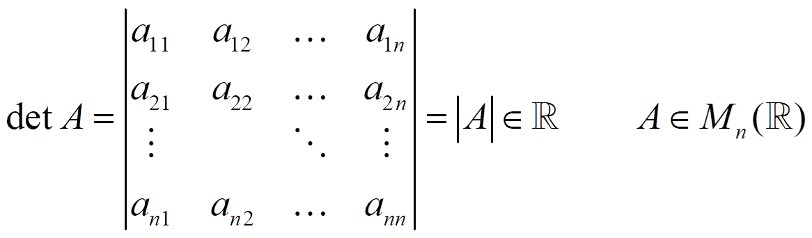

Un determinante es el número resultante si operamos en una matriz cuadrada de determinada forma:

•Orden 1:

•Orden 2:

•Orden 3: Regla de Sarrus


•Orden n (n > 3): El menor complementario del elemento aij, αij, es el determinante de la matriz que resulta al eliminar su fila y su columna. El adjunto del elemento aij es
Aij = (-1)i+j·αij
Entonces:

Propiedades:
- i) det(A) = det(At). Entonces todas las propiedades para filas los son también para columnas
- ii) Si cambiamos dos filas o columnas el signo del determinante cambia
- iii) Si multiplicamos una fila o una columna por un número, el determinante queda multiplicado por ese número
- iv)
-

Análogo para columnas
-
v) Si A tiene una fila o columna de ceros, el determinante es
-
vi) Si A tiene dos filas o columnas iguales → |A| = 0
-
vii) Si A tiene dos filas o columnas proporcionales→ |A| = 0
- ix) |A·B| = |A|·|B|
-
NOTAS:
- 1) Si todos los elementos de una fila o columna son cero excepto uno, el determinante es el producto de ese elemento por su adjunto.
- 2) Si la matriz es triangular o diagonal, el determinante es el producto de los elementos de la diagonal.
- 3) Si una fila o columna es combinación lineal de las otras (Fi = k1F1+k2F2+…)→ |A| = 0
Propiedad fundamental: Si A es invertible→ |A| ≠ 0 entonces, como tenemos que A·A-1 = I

Sea matriz de los adjuntos

entonces